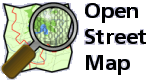

“People trust maps, and intriguing maps attract the eye as well as connote authority.”
- Mark Monmonier, How to Lie with Maps

Even the most basic maps wield influence because of the historical perception that they are hard to create. Leverage this fact for your cause.
Online Map Terminology and Concepts

Online Mapping Technologies
Serving Map Tiles
Online Mapping Technologies
Open Source Libraries and Services
Integrating Maps with Your Website
How the Heck to Get Started
Get your hands on some data;
Just start playing
Geek Out With Online Maps As Storytelling Devices
Thank you for your time.
Please scan the QR code below to evaluate this session.